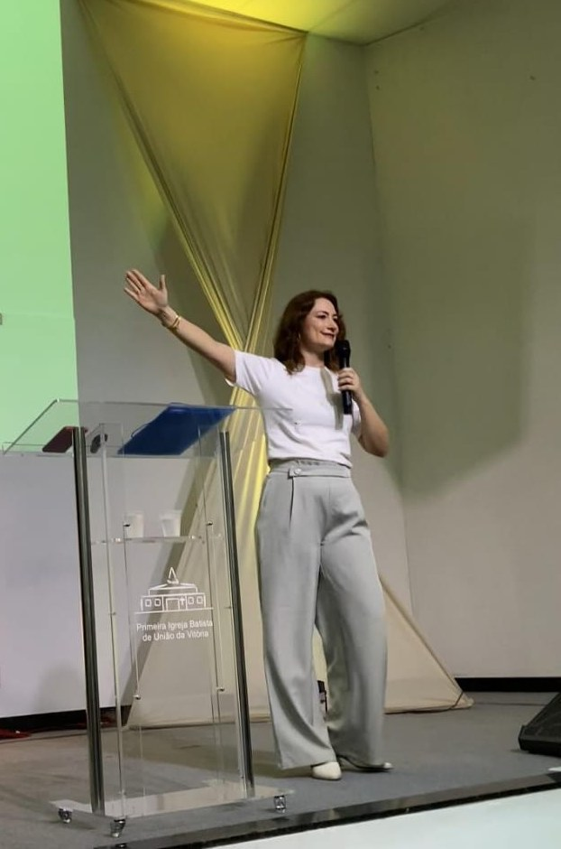
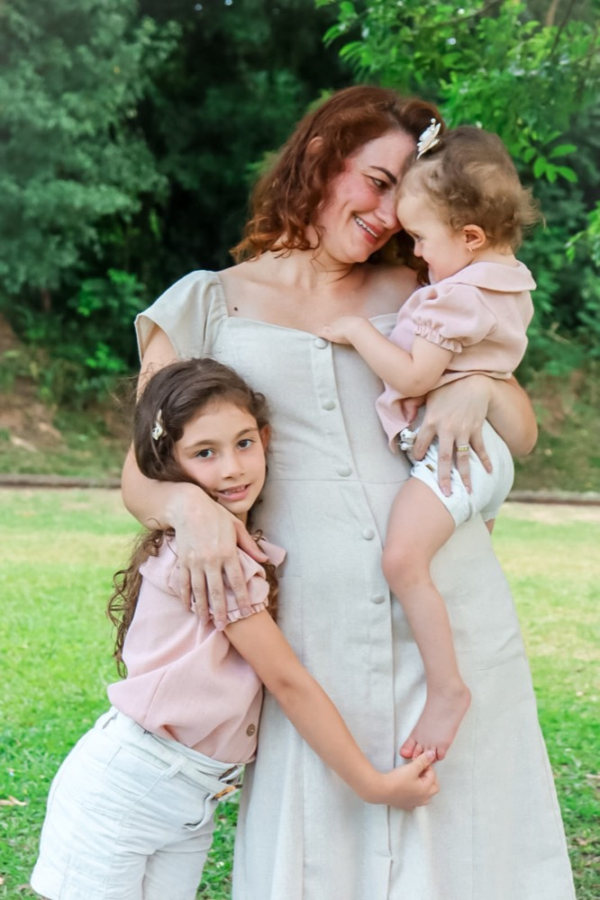

Chegam cansadas — e saem sem serem vistas
Olhares, silêncios e perguntas sem jeito acompanham muitas famílias atípicas. Uma comunidade pode ser o único lugar onde elas esperam não precisar se explicar.

04 / Instituições Religiosas
Boa intenção abre a porta. Mas é o acolhimento prático que faz a família ficar. Muitas famílias atípicas frequentam a comunidade de fé e ainda se sentem invisíveis — não por falta de amor, mas por falta de caminho.
Sou esposa de pastor batista, mãe de uma criança atípica e educadora especialista em inclusão. Levo para igrejas e instituições cristãs uma conversa sobre acolhimento como expressão concreta do amor ao próximo: o olhar que enxerga, a escuta que permanece, a comunidade que acolhe de verdade.
O que muitas famílias não dizem na porta da igreja
Elas trazem também a experiência de incompreensão, de isolamento e de cansaço. E esperam, dentro da comunidade de fé, encontrar descanso.
Olhares, silêncios e perguntas sem jeito acompanham muitas famílias atípicas. Uma comunidade pode ser o único lugar onde elas esperam não precisar se explicar.
Líderes e voluntários querem acolher, mas faltam ferramentas práticas. Falta de preparo, não de coração.
Entre o culto e a vida da semana, a comunidade pode ser rede de apoio ou apenas um lugar de passagem.
Acolher famílias atípicas é cuidado de comunidade. E cuidado, como todo chamado, também se aprende.
Os números
Dados do IBGE sobre a religiosidade, a deficiência e o autismo no Brasil — para lembrar que essas famílias já estão entre nós.
Em 2022, eram 47,4 milhões de evangélicos e 100,2 milhões de católicos. A maioria dos brasileiros vive a fé em comunidade.
É cerca de 1 em cada 11 pessoas. Estatisticamente, é difícil existir uma comunidade grande sem essas famílias.
A maior prevalência está entre 5 e 9 anos: crianças que estão no ministério infantil, na escola bíblica dominical, no culto da família.
Todos os números vêm das fontes indicadas em cada gráfico, consultadas em outubro de 2026, e foram reproduzidos sem arredondamentos próprios. Quando um dado é de outro país ou de um estudo específico, isso está dito no próprio gráfico.
Está nas notícias
Três leituras para entender que o tema já chegou à pauta da denominação.
Em artigo no órgão oficial da Convenção Batista Brasileira, a educadora cristã Estela de Amorim Ribeiro Mendes defende que acessibilidade é, antes de tudo, acolhimento humano, emocional e espiritual.
Ler na fonteDocumento do Departamento de Educação Cristã da CBB inclui a seção “Inclusão e acolhimento da pessoa com deficiência”, com orientações para igrejas, associações e convenções.
Ler na fonteO Centro de Treinamento de Apologética lançou, com a IPB, um curso online gratuito sobre acolhimento de famílias neurodivergentes, com base teológica e orientação prática.
Ler na fonteA virada
Toda comunidade deseja ser um lugar de pertencimento. Mas, para algumas famílias, encontrar esse lugar pode ser mais difícil do que parece.
Nesta conversa, falamos do acolhimento como expressão concreta da fé e de como a comunidade cristã pode construir ambientes onde pessoas e famílias sejam verdadeiramente recebidas.
A igreja pode ser diferente: lugar de presença, de cuidado, de escuta, de comunidade.
Veja na prática
Este é o trecho em que falo sobre o olhar acolhedor de Jesus, no culto da família da Primeira Igreja Batista de União da Vitória.
É assim que a conversa acontece: simples, bíblica e voltada para o que a comunidade pode fazer na semana seguinte.
 Começa em 1h09min53s
Começa em 1h09min53s
Culto da Família, 23/08/2026 — “O Olhar Acolhedor de Jesus” (João 5:1-9). PIB de União da Vitória.

Quem vai falar com o seu público
Sou esposa de pastor batista e caminho na fé reformada. Conheço a vida de igreja por dentro: o culto, a escola bíblica, o ministério de famílias e a rotina de quem pastoreia e de quem está no banco procurando um lugar.
Sou também mãe de Lana, que nasceu com a Síndrome CHARGE, e educadora com pós-graduação em Educação Especial e Inclusiva. Por isso falo à igreja com a linguagem da fé e com ferramentas práticas: acolher é uma decisão que se constrói.
Como funciona
Cada conversa começa entendendo quem está do outro lado.
Conheço a sua comunidade: tradição, público e o momento que vocês vivem.
Definimos o formato: culto da família, encontro de famílias, EBD, congresso ou formação de voluntários e líderes.
Levo conteúdo, vivência real e reflexão, com a linguagem que respeita a identidade da sua comunidade.
“O que a nossa comunidade pode fazer diferente a partir da próxima semana?”
Depoimentos
Mensagens reais de quem já esteve comigo.
Muito tocante, Scheila! Tive que parar pra chorar... Vou mandar para algumas pessoas.
Mensagem recebida após a palestra
Amei quando fala que sua filha tem um diagnóstico, mas ela não é o diagnóstico. Eu realmente estava precisando ouvir isso tudo.
Luciana — mensagem recebida após a palestra
Perguntas
O trabalho pode ser realizado em igrejas e instituições cristãs. Falo a partir da tradição batista e reformada, mas conversamos antes para que a linguagem e o formato respeitem a identidade da sua comunidade.
Não. A palestra é sobre acolhimento como prática de toda a comunidade. As famílias atípicas são o ponto de partida porque, muitas vezes, são as que mais sentem a falta dele.
Pode ser um culto da família, um encontro de famílias, uma aula na EBD, um congresso ou uma formação de voluntários e líderes. O formato é definido na conversa inicial.
O primeiro passo é conversar comigo. Quero conhecer a sua comunidade e entender o que vocês desejam construir. A partir disso, definimos o formato e as condições.
Vamos conversar sobre como levar essa mensagem para a sua comunidade. Conte um pouco sobre a igreja e eu retorno pelo WhatsApp.
Um olhar que acolhe transforma. Prefiro falar pelo WhatsAppOutros públicos